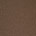

Playback Settings
‹ Quality
‹ Playback Speed
Vitae sed condimentum
October 20, 2015 • 1,420,890 views

The Unemployed Club
184,000 subscribers
An exploration of minimal editorial aesthetics and atmospheric rhythm. Curated stream matching the classic Future Imperfect philosophy • Zero compression degradation • High fidelity audio pacing.